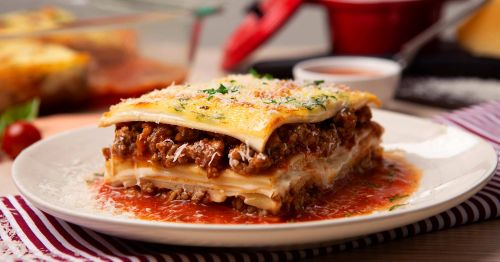

Lasaña de carne molida
Utensilios
- Tarro
- Bandeja de horno
- Microondas
- Cuchara
- Envoltura de plástico
- Horno
- Bandeja de horno
- Sartén
- Espátula
Ingredientes
receta para 6 personas
- 10 Jitomates cortados en cuartos
- 3 Cucharadas de aceite de oliva
- 1/4 De pieza de cebolla cortada en trozos
- 2 Dientes de Ajo
- 1 Cubo de Concentrado de Tomate con Pollo CONSOMATE®
- 1/2 Cucharadita de sal con cebolla en polvo
- 1 Taza de agua
- 1 1/2 Cucharadas de finas hierbas
- 1/4 De cucharadita de pimienta negra molida
- 2 Cucharadas de aceite vegetal
- 1 Cucharada de cebolla picada finamente
- 1 Cucharadita de ajo picado finamente
- 600 Gramos de carne molida de res
- 1 Cucharada de sal con cebolla en polvo
- 1 Cucharada de Jugo MAGGI®
- 3 Cucharadas de Salsa Tipo Inglesa CROSSE & BLACKWELL®
- 250 Gramos de champiñones rebanados
- 9 Láminas de pasta para lasaña precocida
- 200 Gramos de queso tipo manchego
¡A cocinar!
Mezcla
- Horno precalentado a 200 °C
- Para la salsa, coloca los jitomates en una charola con el aceite de oliva, la cebolla y el ajo;
hornea a 200 °C de 45 a 50 minutos o hasta que estén dorados. Licúa los jitomates, la cebolla y los
ajos rostizados con el Concentrado de Tomate con Pollo CONSOMATE® la sal con cebolla, el agua, las
hierbas finas y la pimienta.
Hornea
- Para el relleno, calienta el aceite y fríe la cebolla con el ajo hasta que cambien de color, añade
la carne, la sal con cebolla, el Jugo MAGGI®, la Salsa Tipo Inglesa CROSSE & BLACKWELL® y los champiñones;
mezcla y cocina hasta que la carne esté cocida.
Desmolda y decora
- En un refractario engrasado con un poco de aceite, coloca una cucharada de salsa, una capa de láminas de lasaña
precocida, una de relleno, una de salsa y queso rallado; repite el procedimiento hasta terminar con todos los
ingredientes. Por último, termina con una capa de queso tipo manchego. Hornea a 200 °C de 20 a 25 minutos. Ofrece.